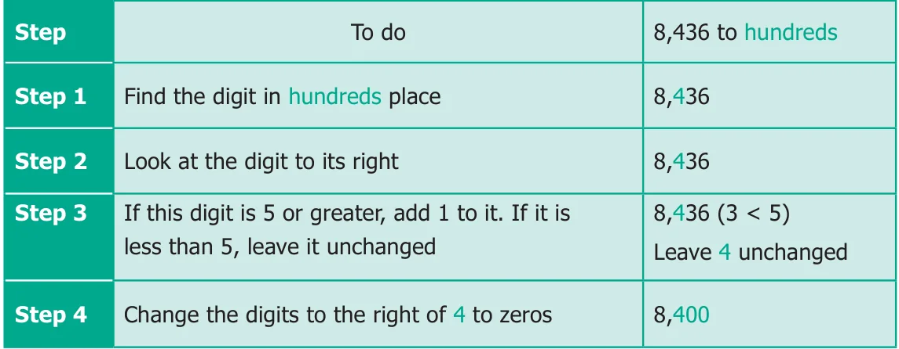
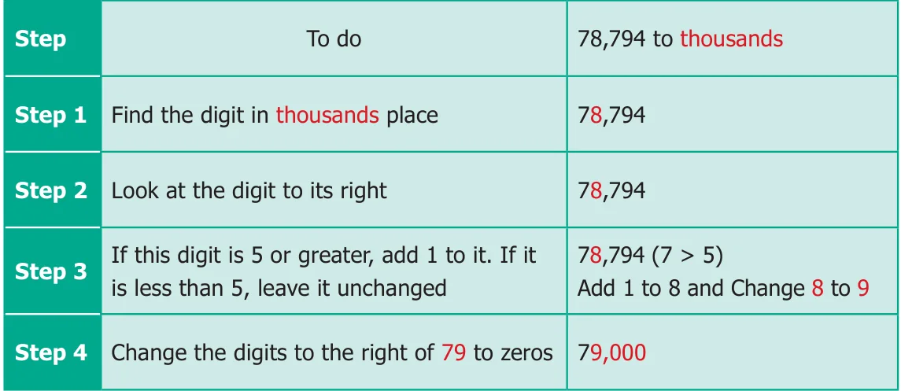
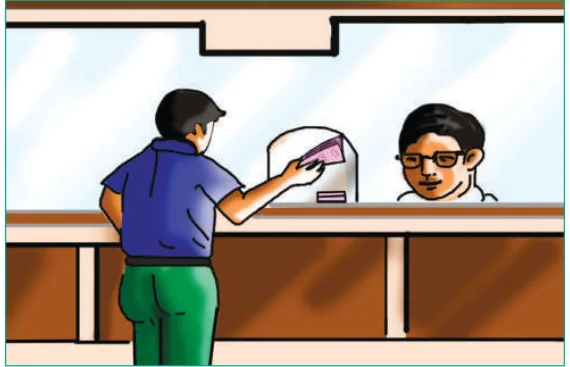
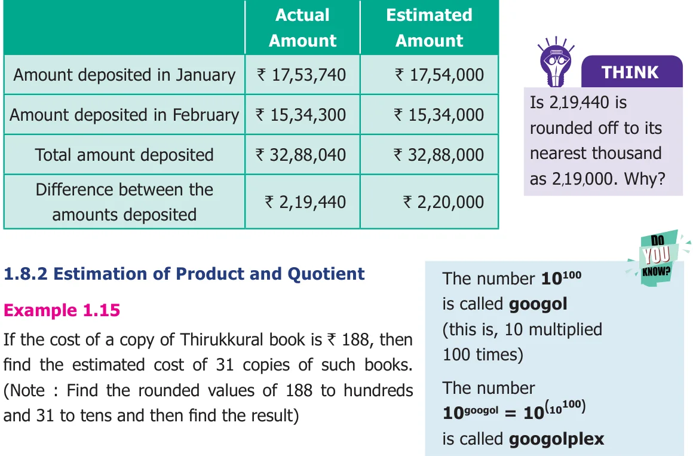
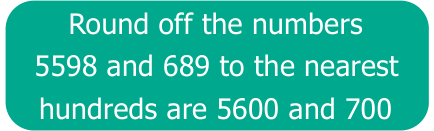

Let us see few examples now,
- Nearly 60,000 people watched the Republic day parade at New Delhi.
- About 2,80,000 people of various countries died due to earthquake and Tsunami on 26th December 2004 in the Indian ocean.
- The India-Pakistan cricket match was viewed by about 30 million cricket fans in the Television all over the world.
We often come across statements like these in TV channels and dailies. Do these news items, give the exact numbers? No. The numbers mentioned are not accurate. They are only the approximate or closer values to the actual ones. This is the reason, why we generally use words like "about", "nearly" and "approximately". These numbers are only the estimation of the actual value. The word 'about' denotes the number not exactly, but a little more or less. This value is called the estimated value.
The actual figure, though not exactly possible, could have been 59,853 or 61,142 for the first example and it could have been 2,78,955 or 2,80,984 for the second example. Imagine and write about, what could have been the exact number for the third example given above? Similarly, there are many more possible numbers. Thus,
- to get a rough idea we need estimation.
- to get the estimated value, we generally round off the numbers to their nearest tens, hundreds or thousands.
Some real life situations where we use estimates are
- Cost of a Television, Refrigerator, Mixer Grinder etc., are usually expressed in thousands of rupees.
- The Voters population in an Assembly Constituency in a state is often stated in lakhs.
- The Central or State Government's Annual Budget is usually given in lakh crore.
When an exact answer is not necessary, estimation strategies can be used to determine a reasonably close answer.
Activity
- Fill in the jar with some items like Tamarind seeds. Let each student give an estimate of the number of items. Make a table of the result by finding the difference of the estimate and the actual amount.
- Get a large jar and a bag of Tamarind seeds and put 30 seeds in the jar. Observing the contents, estimate how many seeds roughly will fill the whole jar. Continue to fill the jar to check your estimate.
Rounding off is one way to find a number for estimation that is quite convenient. It gives us the closest suitable number according to a given place value. There are four steps involved in the rounding process. Let us illustrate this with an example.
Example 1.12
Round off the number 8,436 to the nearest hundreds.

Example 1.13
Round off the number 78,794 to the nearest thousands.

Try These
- Round off the following numbers to the nearest ten.
- 57
- 189
- 3,956
- 57,312
- Round off the following numbers to the nearest ten, hundred and thousand.
- 9,34,678
- 73,43,489
- 17,98,45,673
- Mount Everest, the highest peak in the world located in Nepal is 8,848 m high. Its height can be rounded to the nearest thousand as ____.
1.8.1 Estimation of Sum and Difference
Example 1.14

The amount deposited by a Gold merchant in his bank account in the month of January is ₹17,53,740 and in the month of February is ₹15,34,300. Estimate the sum and difference of the amount deposited to the nearest thousand.
Solution
Rounding off to the nearest thousand is as follows.

Solution
Here, 188 is nearer to 200 and 31 is nearer to 30.
The exact cost of 31 copies is \(188 \times 31 =\) ₹5828 whereas,
The estimated cost of 31 copies \(= 200 \times 30 =\) ₹6000
Therefore, the estimated cost of 31 copies of Thirukkural books is ₹6000.
Example 1.16
Find the estimated value of \(5598 \div 689\).
Solution
Actual value vs. Estimated value:
\(689 \frac{8}{5598} 700 5600\)

\(\frac{5512}{86} 56000\)
Hence, the estimated value of \(5598 \div 689\) is 8
Try These
- Estimate the sum and the difference rounding off to nearest thousands: 8457 and 4573.
- Estimate the product : \(39 \times 53\)
- Estimate the quotient : \(6845 \div 395\)